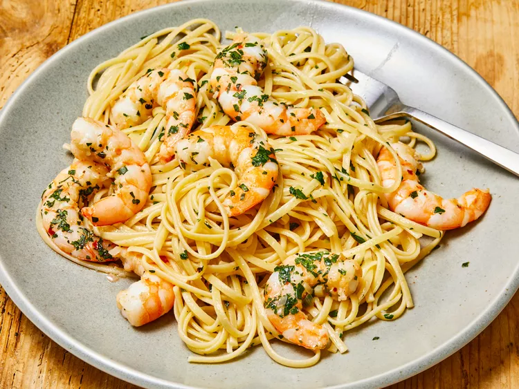

Shrimp Pasta

Description
Shrimp scampi with linguine is the ultimate seafood pasta dish. Works with any pasta; angel hair is less filling.
This quick and easy shrimp scampi pasta recipe is an Allrecipes fan-favorite, with more than one thousand ratings and hundreds of reviews. And it's ready to serve in only 40 minutes. Read on to get tips to make the best shrimp scampi with pasta — it's a top-rated recipe that's simple enough for weeknight dinners and fancy enough for a dinner party.
Ingredients
-
Shrimp: Choose large shrimp (31 to 35 shrimp per pound) to get best results for this recipe. You can buy fresh shrimp and peel and devein it yourself, or buy frozen shrimp. Thaw frozen shrimp before using.
-
Pasta: This recipe uses a 16-ounce package of linguine, but you can substitute the pasta of your choice, like angel hair pasta, fettuccine, or spaghetti.
-
Butter: Use unsalted butter. You can add salt to taste later in the recipe.
-
Extra-virgin olive oil: The flavor of the olive oil comes through in this recipe, so use the best quality.
-
Shallots and garlic: These aromatics add flavor and fragrance to shrimp scampi.
-
White wine: Use a dry, crisp white wine for shrimp scampi sauce. Pinot grigio or sauvignon blanc are good choices, and you can drink the leftover wine with dinner.
-
Lemon juice: Use freshly squeezed lemon juice for the best flavor.
-
Seasonings: Kosher salt and freshly ground black pepper amplify the flavors, and a pinch of dried red pepper flakes give shrimp scampi a subtle kick. Use more red pepper flakes if you like things a bit more spicy.
-
Parsley: Fresh parsley adds eye-catching color and a bright, peppery flavor.